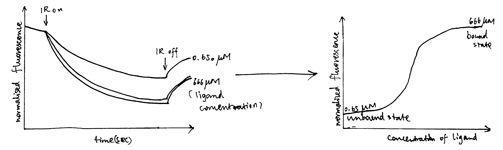

2020
1 Enzyme
2 ATP Synthase
3 Fluorescence spectroscopy
4 High-resolution Nuclear Magnetic Resonance Spectroscopy.
5 Electrospray mass spectrometry.
6 Analytical ultracentrifugation: equilibrium sedimentation.
\[ M = \dfrac{2RT}{(1-v\rho)\omega^2}\dfrac{d(\ln(c))}{dr^2} \]
\[ M = \dfrac{2\times 8.314\times298.15}{(1-0.74)\times27000^2}\dfrac{d(\ln(c))}{dr^2} = 2.6156\times10^{-5}\dfrac{d(\ln(c))}{dr^2} \]
r = c(6.918, 6.923, 6.924, 6.929, 6.932, 6.935, 6.942, 6.943, 6.945,
6.952, 6.955, 6.962, 6.964, 6.968, 6.973, 6.977, 6.978, 6.983,
6.985, 6.987, 6.992, 6.994, 6.998, 7.002, 7.004, 7.006, 7.009,
7.013, 7.016, 7.019, 7.022, 7.024, 7.026, 7.031, 7.033, 7.038,
7.042, 7.045, 7.047, 7.05, 7.053, 7.059, 7.061, 7.062, 7.065,
7.069, 7.07, 7.075, 7.077, 7.081, 7.084, 7.087, 7.09, 7.095,
7.098, 7.102, 7.106, 7.109, 7.11, 7.114, 7.116, 7.121, 7.123,
7.131, 7.137, 7.139, 7.141, 7.145, 7.146, 7.148, 7.15, 7.156,
7.158, 7.163, 7.166, 7.17)
od <- c(0.0645, 0.0658, 0.0731, 0.07, 0.0726, 0.0721, 0.0762, 0.0755,
0.0807, 0.082, 0.0809, 0.0914, 0.0909, 0.0969, 0.0979, 0.0983,
0.1054, 0.1038, 0.095, 0.1105, 0.1087, 0.1045, 0.1181, 0.1189,
0.1224, 0.1302, 0.1187, 0.133, 0.1306, 0.1413, 0.1378, 0.1371,
0.1333, 0.1521, 0.1481, 0.1578, 0.1498, 0.1495, 0.1605, 0.1699,
0.1664, 0.1757, 0.1802, 0.1834, 0.1882, 0.1856, 0.195, 0.2039,
0.1999, 0.1874, 0.2191, 0.2143, 0.215, 0.2186, 0.2283, 0.2347,
0.2677, 0.2532, 0.2596, 0.262, 0.2812, 0.271, 0.2816, 0.2841,
0.31, 0.3141, 0.3336, 0.3147, 0.334, 0.3528, 0.3548, 0.3572,
0.3752, 0.373, 0.3863, 0.3792)Prepare data \(\ln(c)\) and \(r^2\):
# divide 2 by 100 to convert cm to m
r2 = (r/100)^2; lnc = log(od)mod <- lm(lnc~r2)
summary(mod)##
## Call:
## lm(formula = lnc ~ r2)
##
## Residuals:
## Min 1Q Median 3Q Max
## -0.102145 -0.020829 0.001427 0.022606 0.074815
##
## Coefficients:
## Estimate Std. Error t value Pr(>|t|)
## (Intercept) -26.9712 0.2063 -130.7 <2e-16 ***
## r2 5065.5170 41.5559 121.9 <2e-16 ***
## ---
## Signif. codes: 0 '***' 0.001 '**' 0.01 '*' 0.05 '.' 0.1 ' ' 1
##
## Residual standard error: 0.03669 on 74 degrees of freedom
## Multiple R-squared: 0.995, Adjusted R-squared: 0.995
## F-statistic: 1.486e+04 on 1 and 74 DF, p-value: < 2.2e-16# only gradient is importantPlot it:
plot(r2, lnc)
abline(-26.9711515, 5065.51703)
2.6156e-5 * 5065.51703## [1] 0.1324937#2.6156e-5 * 506551.703Introduction
The Ca2+ selectivity of voltage-gated calcium (Cav) channels remained unclear. They were thought to use a ‘knock-off’ methanism which requires multiple ion-binding cores, but mutational analyses supported a single high-affinity Ca2+ binding site. This paradox is explained by the mechanism proposed in this article, based on the crystal structures of CavAb channels.
Methods
In this study, the authors created several mutants of bacterial Nav channel NavAb by site directed mutagenesis using QuickChange at the selectivity filter region1. Some of these mutations changes the activity of the channel from allowing efflux of Na+ to allowing influx of Ca2+ to different extents (quantified by the relative permeability of Ca2+ against Na+). Baculovirus were used as the vector to infect Trichopulsia ni cells. Proteins were collected from insect cells, purified, concentrated to ~20mg ml-1, and reconstituted into DMPC:CHAPSO bicelles (Figure 1). Crystals were grown in a hanging-drop vapour-diffusion format.

Figure 1: The DMPC:CHAPSO bicelle. Bicelles are disks with a planar region formed by long chain lipid phospholipids and a rim composed of short chain phospholipids or detergent molecules. It provides an environment that resembles a lipid bilayer where membrane proteins’ natively resides. Membrane proteins can be incorporated into bicelles for functional studies as well as crystallisation.
Before X-ray diffraction data collection, crystals were soaked with cryo-protectant solutions containing Ca2+, Mn2+ or Cd2+ of indicated concentrations. These ions travel through solvent channels within the crystals and chelate with amino acid residues in the selectivity filter region.
X-ray diffraction data were integrated and scaled with the HKL2000 packaged and further processed with the CCP4 package. THe structure of CavAb and its derivatives were solved by molecular replacement by using an individual subunit of the NavAb structure (PDB code 3RVY) as the search template. This choice is natural since the proteins used in this study are derived from NavAb and differ from it by no more than 3 amino acid residues.
The divalent cations were identified by anomalous difference Fourier maps calculated using data collected at wavelengths of 1.75 Å for Ca2+, Cd2+ and Mn2+. Anomalous scattering describes cases where a pair of structure factors \(\mathbf{F}_{hkl}\) and \(\mathbf{F}_{\overline{hkl}}\) does not obey Friedel’s law2, which occurs when the incident X-ray photons have an energy close to a transition energy of the diffracting atom, resulting in absorption of radiation energy and change in phase (normal scattering does not change the phase). At the wavelengths convinient for diffraction, only atoms heavier than phosphorus or sulfur behave as anomalous scatterers. While anomalous scattering data are frequently used to solve the phase problem (in techniques known as single/multiple wavelength anomalous dispersion (SAD/MAD)), it can also be used (as in this study) to calculate an anomalous difference map after phases are available to show the locations of the heavy atoms.3
Crystallography and NMR System software was used for refinement of coordinates and B-factors. Final models were obtained after several cycle refinement with REFMAC and PHENIX and manual re-building using COOT. The geometries of the final structural models of CavAb and its derivatives were verified using PROCHECK.
13 crystal structures of 5 proteins (NavAb and 4 CavAb variants) with the following divalent cation concentrations were determined and deposited into PDB:4
- TLESWSM (NavAb) + Ca2+ 15mM
- (TLEDWSM, TLEDESD, TLDDWSM) + Ca2+ 15mM
- TLDDWSD + (Ca2+ 15mM; Mn2+ 100mM; Cd2+ 100mM)
- TLDDWSN + Ca2+ (0.5, 2.5, 5, 10, 15mM)
Of the 13 crystal structure models, 4MVR (175TLDDWSD181) corresponds to the protein with the greatest permeability ratio PCa:PNa , while 4MS2 (175TLDDWSN181) diffracted to the highest resolution (2.75 Å).
Analyses of Results
Ca2+ Binding Sites
Using the anomalous diffraction data, the F+Ca - F-Ca anomalous difference map was calculated. Two strong peaks followed by a weaker peak were found along the ion-conduction pathway, which correspond to the three Ca2+ binding sites. They are designated site 1, 2 and 3 from the extracellular side to the intracellular side.
Site 2 is the site with the highest affinity for Ca2+. It is surrounded by a total of 8 oxygen atoms, 4 of which coming from the carboxylate of D177 above and the other 4 from the carbonyl of L176 below. Site 1 is coordinated by the plane of 4 carboxyl groups from D178, and site 3 by the plane of 4 carbonyls from T175 (Figure 2). Throughout the selectivity filter, the O-Ca2+ coordination distances are in the range of 4.0-5.0 Å, which is much longer than the ionic diameter of Ca2+ (2.28 Å), suggesting that the bound Ca2+ ion maintains its hydration shell while passing through the pore. Site 3 has the lowest affinity, consistent with its role in exit of Ca2+ from the selectivity filter into the central cavity. Figure 3 shows the molecular model and electron density near the selectivity fileter region of CavAb (TLDDWSN + 15mM Ca2+) in COOT5 (contoured at r.m.s.d = \(3.02 \sigma\)).

Figure 2: A schemetic showing the Ca2+ ion coordination sites of CavAb (TLDDWSD)

Figure 3: The selectivity filter region of 4MS2.
The relative affinities of the three sites were further confirmed by experiments on CavAb (TLDDWSN) with varying Ca2+ concentrations (0.5, 2.5, 5, 10, 15mM): at low Ca2+ concentration, two strong peaks of approximately equal intensity are found at Site 1 and Site 2; at high concentration the electron density is significantly enhanced in Site 2 and decreased in Site 1. The electron density at Site 3 remains low in all concentrations.
Ion-Permeation Mechanism
Based on the properties of the three coordination sites, an ion-permeation mechanism can be deduced. The three coordination sites are separated by a distance of about 4.5 Å, which makes it energetically unfavourable for Ca2+ to occupy adjacent sites simutaneously. Thus the authors suggested that the selectivity filter oscillates between two states, in which either a single hydrated Ca2+ occupies Site 2, or two of them each occupies Site 1 and Site 3. The entry of Ca2+ into Site 1 is promoted by it high extracellular concentration, and the exit of Ca2+ is facilitated by the low affinity of Site 3.
Notably, this mechanism suggests that Ca2+ ions are kept hydrated during its passage through the selectivity filter. This is very different from the mechanism by which potassium channels achive selectivity, which requires K+ ions’ hydration shell to be removed.
Roles of Key Selectivity Filter Residues
The five variants of CavAb the author produced have different Ca2+ selectivity ratios, which can be partially explained by directly comparing the difference in the arrangement of selectivity filter residues. This comparison is sometimes facilitated by superposition of one structure onto another. For example, the carboxyl group of D177 in TLDDWSD interacts with the Ca2+ ion, while the carboxyl group of E177 in TLEDWSD swings away from the selectivity filter and forms a hydrogen bond with D181 and the main-chain nitrogen atoms of S180.
specifically, from 175TLESWSM181 to TLDDWSD, TLDDWSN, TLDDWSM, TLEDWSM, TLEDWSD and TLDSWSM↩︎
Friedel’s law states that \(\mathbf{F}_{hkl}\) and \(\mathbf{F}_{\overline{hkl}}\) have the same amplitude but opposite phase angle.↩︎
This map is automatically calculated in phenix.refine.↩︎
namely 4MS2, 4MTO, 4MTF, 4MTG, 4MVU, 4MW8, 4MVZ, 4MVM, 4MVO, 4MVQ, 4MW3, 4MVS, 4MVR↩︎
COOT version 0.9.1 (packaged with CCP4), on Linux version 5.8.16-2-MANJARO↩︎
1 Circular Dichorism (CD)
Reference: Ranjbar and Gill (2009); Kelly, Jess, and Price (2005);Whitmore and Wallace (2008)
Circular dichorism measures the difference in absorption of left-hand and right-hand circularly polarised light by optically active (chiral) molecules (usually biological macromolecules). It serves as a rapid way to assess structural information on proteins, carbohydrates, nucleic acids, pharmaceuticals, liquiud crystals, etc., in the solution state.
1.1 Physical Principles
Electromagnetic waves (EM waves) has an electrical (E) component and a magnetic (M) component perpendicular to each other and both are perpendicular to the axis of propagation. Usually, only the E component is depicted for simplicity.
Most light sources have E components in all orientations, and when they pass through a slit, they become plane polarised, and can be represented by a simple sinusoidal wave. Adding up two plane polarised light perpendicular to each other produces interesting resultant waves, which can be visualised with plotly in R (Sievert 2018) (which is an uncommon use ‘invented’ by me1). Assuming we are superposing two sinusoidal waves of the same amplitude and frequency with various phase differences, we can then compute the pattern of the resultant wave as a function of the phase difference:
library(plotly)
library(tibble)
calc_waves <- function(phase_diff = 0){
# compute y and z values for given x values of the waves
# first arbitrarily choose evenly-spaced points on the x_axis
x_axis = x=seq(1,20,0.1)
# compute the y, z values of the first sin wave on the xy plane
sin1 <- tibble(x=x_axis,y=sin(x),z=0)
# compute the y, z values of the second sin wave on the xz plane,
# taking the phase difference into account
sin2 <- tibble(x=x_axis,y=0,z=sin(x + phase_diff))
# compute the axes of the resultant wave
# each y and z value is the sum of corresponding values in the 2 component waves
resultant <- tibble(x=x_axis, y = sin1$y+sin2$y, z = sin1$z+sin2$z)
return(list(sin1, sin2, resultant))
}
plot_waves <- function(wave_list, components = c('sin1', 'sin2'), resultant = 'resultant'){
# plotting
plot_ly() %>%
add_trace(x=~x, y=~y, z=~z, name=components[1], data = wave_list[[1]], type='scatter3d', mode='lines') %>%
add_trace(x=~x, y=~y, z=~z, name=components[2], data = wave_list[[2]], type='scatter3d', mode='lines') %>%
add_trace(x=~x, y=~y, z=~z, name=resultant, data = wave_list[[3]], type='scatter3d', mode='lines')
}When phase difference is zero, the resultant wave is also sinusoidal, and the plane in which it resides is oriented at 45\(^\circ\) to each component wave, as shown in Fig. 1.1 (this is an interactive HTML widget so you can rotate, drag and zoom! Unfortunately it cannot be rendered in LaTeX, so please visit ../tutorial/three-biophysical-methods.html if you are reeading the LaTeX PDF output).
calc_waves(phase_diff=0) %>% plot_waves()Figure 1.1: 0 phase difference results in a sinusoidal wave
As shown in 1.2, When the phase difference is \(\pi/2\), the resultant wave is helical and is said to be circularly polarised (for other phase differences, the pattern is helical but ellipised.
L <- calc_waves(phase_diff=pi/2)
plot_waves(L, resultant = 'resultant: left circularly polarised')Figure 1.2: Formation of left circularly polarised wave.
L <- L[[3]] # the third tibble represents the resultant, which will be used laterNote the handedness of the resultant wave: when the phase difference is \(\pi/2\), it is left-handed and it becomes right-handed when the phase difference is \(-\pi/2\). The latter is drawn in Fig. 1.3.
R <- calc_waves(phase_diff=-pi/2)
plot_waves(R, resultant = 'resultant: right circularly polarised')Figure 1.3: Formation of right circularly polarised wave.
R <- R[[3]]As shown in Fig. 1.4 If we add up the left and right circularly polarised light, the resultant is a plane polarised light. Thus it can be said that a plane polarised light can be viewed as being made up of two circularly polarised components of equal magnitude and frequency.
plot_waves(list(L, R,
resultant=tibble(x=L$x, y = L$y+R$y, z = L$z+R$z)),
components = c('left circularly polarised', 'right circularly polarised'),
resultant = 'plane polarised')Figure 1.4: Addition of two identical waves of oppsite handedness results in a plane polarised wave.
CD measures differential absorption of these components. If the two components are absorbed to the same extent, clearly the resultant will still be planar as shown above. If there is differential absorption, as I simulate in Fig. 1.5, the resultant wave will be elliptical polarised. Here the R component is absorbed more than the L component, and the resultant ellipsed wave is left-handed. The CD signal (formally \(\Delta A=\Delta A_\text{L}-\Delta A_\text{R}\)) is generally reported in terms of the ellipticity, \(\theta\), of this resultant wave. \(\theta=\arctan(b/a)\) where b and a are the minor and major axes of the ellipse. \(\theta\) can be easily converted to \(\Delta A\) by the simple relationship: \(\theta=32.98\Delta A\). The CD spectrum is obtained when the CD signal \(\theta\) or \(\Delta A\) is measured as a function of wavelength.
L1 <- L %>% mutate(y = 0.9 * y, z = 0.9 * z) # 10% absorption of L
R1 <- R %>% mutate(y = 0.7 * y, z = 0.7 * z) # 30% absorption of R
plot_waves(list(L, R,
resultant=tibble(x=L1$x, y = L1$y+R1$y, z = L1$z+R1$z)),
components = c('left circularly polarised', 'right circularly polarised'),
resultant = 'elliptical polarised')Figure 1.5: Differential absorption of circularly polarised light. Here 10% of the L component and 30% of the R component is absorbed (90% and 70% transmitted, respectively).
A CD signal will be observed when a chromophore is chiral (either intrinsically chiral, bonded to a chiral atom, or due to asymmetric enviornment). In proteins, such chromophores include the peptide bond (absorption below 240 nm), aromatic amino acid side chains (absorption in the range 260~320 nm) and disulphide bonds (weak absorptoin around 260 nm).
1.2 Experimental Setup
The EM wave used in CD is UV, usually with \(\lambda\) in the range 170~320 nm. Traditionally Xe arc lamps have been used as the light source of UV, but they can hardly achieve a wavelength below 180 nm. Now, high frequency UV can be generated by modern synchrotrons, and extending of CD data into the far UV region improves reliability of secondary structure prediction (see Section 1.3).
There are various methods by which the CD effect can be measured in a spectropolarimeter:
- modulation, in which the incident readiation is continuously switched between the L and R ocmponents
- direct subtraction, in whiich the absorbances of the 2 components are measured separately and subtracted from each other
- ellipsometric, in which the ellipticity of the transmitted radiation is measured
The modulation method is most commonly used. The experimental setup is described as follows:
- plane polarised light is split into the L and R components by passage through a modulator subjected to an alternating electric field
- the modulator normally consists of a piezoelectric quartz crystal and a thin plate of isotropic material (e.g. fused silica) tightly coupled to the crystal.
- the alternating electric field induces structural changes in the quartz crystal; these make the plate transmit circularly polarised light at the extremes of the field
- as the transmitted radiation of switched between L and R components, these are detecred in turn by the photomultiplier.
1.3 Application of CD
Far UV and near UV regions of CD give different information about a protein.
Absorption in the far UV region (170-250 nm) is mainly due to the \(\pi\rightarrow\pi^*\) and \(n\rightarrow\pi^*\) transitions in the peptide bonds, which is dependent on \(\Psi\) and \(\Phi\) torsional angles. Thus different types of secondary structures, such as \(\alpha\)-helices, \(\beta\)-sheets, \(\beta\)-turns, each have their characteristic CD spectrum (Fig. 1.6). These standard curves can be linearly combined to estimate the proportion of each secondary structure in a protein of interest.

Figure 1.6: Experimental setup of CD; characteristic curves of some secondary structures
The spectra in the near-UV region (260-320 nm) arise from the aromatic amino acids, each with a characteristic CD profile. The actual shape of the near UV CD spectrum will depend on the number of each type of aromic amino acid present, their mobility, their residing environment. Thus it can serve as a fingerprint of the of the tertiary structure of a protein.

Figure 1.7: The near UV CD spectrum of a dehydroquinase, labelled with contribution from each aromatic amino acid side chain.
By combining the far- and near-UV CD spectra, we can obtain a summary of the overall structural features of the protein of interest. Although it gives little insight into the precise 3D structure of the protein, it serves at a rapid way to detect conformational differences between two similar proteins in solution. Specifically, it can be used to:
- monitor the progress of protein folding (especially the detectiion of molten globule-like structures)
- compare the wild type and mutant forms of a protein
- confirm a modification (tagging) will not affect the protein’s native conformation and normal function
- assess thermal stability (unfolding at high temperature)
- show the formation of amyloid \(\beta\) protein in Alzheimer disease (Barrow et al. 1992)
CD can not only be applied to proteins but also to other chiral molecules. Such applications include:
- determination of nucleic acid conformations (A-RNA, A-DNA, B-DNA, Z-DNA)
- determination of nucleic acid-ligand interactions, e.g. between cationic porphyrins and DNA (Pasternack 2003)
- conformational study of biomolecular interaction with nanoparticles, where the degree of protein or nucleic acid denaturation is estimated (Liu and Webster 2007)
1.4 Other CD-based Techniques
The experiment described above is the conventional electronic circular dichorism (ECD). During the past decades, many other CD-based techniques have been developed to solve more specific questions. These include magnetic CDs (MCD, magnetic vibrational circular dichroism (MVCD), XMCD), fluorescence detected CD (FDCD), near-infrared CD (NIR-CD), vibrational CDs (VCD, FTIR-VCD), HPLC-CD, stopped-flow CD, and synchrotron radiation CD (SRCD).
2 Small-angle X-ray Scattering (SAXS)
Reference: Kachala, Valentini, and Svergun (2015), Kikhney and Svergun (2015)
Small-angle X-ray Scattering (SAXS) detects the X-ray scattering pattern of macromolecules in the solution state. Information about particle shape and size can then be obtained from the angular dependence of scattering.
SAXS provides low resolution information on the structure, conformation and assembly state of proteins, nucleic acids and various macromolecular complexes. Importantly, it offers powerful means for the quantitative analysis of flexible systems, including intrinsically disordered proteins (IDPs) and multi-domain proteins with flexible linkers.
2.1 Physical Principles
The the X-ray used in SAXS has wavelength of about the same size as the macromolecules in the sample, which allows formation of interference pattern (Fig. 2.1).
![(A) for an array (usually a crystal) of small scatterers whose size is small compared to the wavelength of the incident light, an interference pattern can be observed due to the fixed path differences (and hence phase differences) between any two scatterers; (B) in the solution state of such small particles, their random orientation and movement make scattering to occur in all directions (so that a pattern cannot be observed); (C) when the size of the scatterers is comparable to or greater than the wavelength, angle-dependent scatterings due the nuclei/electrons of pairs of atoms within individual particles can thus be observed (larger angle, larger path difference).](../img/saxs-principle-1.jpg)
Figure 2.1: (A) for an array (usually a crystal) of small scatterers whose size is small compared to the wavelength of the incident light, an interference pattern can be observed due to the fixed path differences (and hence phase differences) between any two scatterers; (B) in the solution state of such small particles, their random orientation and movement make scattering to occur in all directions (so that a pattern cannot be observed); (C) when the size of the scatterers is comparable to or greater than the wavelength, angle-dependent scatterings due the nuclei/electrons of pairs of atoms within individual particles can thus be observed (larger angle, larger path difference).
2.2 Experimentation and Data Processing
SAXS uses a collimated monochromatic X-ray beam to illuminate the sample, and the intensity of the scattered X-rays a is recorded. The scattering of the pure solvent is also collected and subtracted from the sample solution scattering. The resulting 2D scattering pattern is translated into a 1D I vs. q relationship (where I is intensity and \(q = 4\pi\sin(\theta/2)/\lambda\)), and the data is transformed and plotted in a variety of ways.
Several parameters can be calculated from SAXS data, including molecular weight, excluded particle volume, maximum dimension \(D_\text{max}\) and the radius of gyration \(R_g\).
\(R_g\) can be directly extracted from SAXS data using the Guinier approximation, which states that, when the incident angle is small (approaching 0), the angular dependence of scattering can be described by the equation \(I(q)=I_z\exp(-q^2R_g^2/3)\), where \(R_g\) is the radius of gyration of the particle. When \(\ln(I(q))\) is plotted against \(q^2\) (\(\ln(I(q)) = \ln{I_0}-(R_g^2/3)q^2\)), \(R_g^2/3\) is the slope of the resulting straight line.
\(R_g\) provides a measure of the overall size of the macromolecule. It is the average root-mean-square distance to the centre of density in the molecule weighted by the scattering length density.
Some plots can emphasised sample flexibility, e.g. a Kranky plot (\(IQ^2\) agianst \(Q\)) can help identify an unfolded protein, as shown in Fig. 2.2

Figure 2.2: The Kratky plot
\(I(q)\) can be considered as a reciprocal space as a Fourier transform of \(p(r)\), which is the distribution of distances between pairs of atoms in real space. These two are related to each other by the equation:
\[p(r)=\dfrac{r^2}{2\pi^2}\int_0^\infty\dfrac{q^2I(q)\sin{(qr)}}{qr}ds\]
\(p(r)\) can be obtained from experimental data by indirect Fourier transformation. One such distribution is shown in Fig. 2.3.

Figure 2.3: Distance distribution function p(r) vs. r. Globular compact particles have a more symmetric distribution while unfolded particles have an skewed distribution with an extended tail.
To produce meaningful results, SAXS requires that the samples to be monodisperse (non-aggregated), which can be verified by dynamic light scattering (DLS) or analytical centrifugation (AUC).
3 Analytical Ultracentrifuge (AUC)
Reference: Harding et al. (2015); Uchiyama, Noda, and Krayukhina (2018); Unzai (2018); Harding and Rowe (2010)
The analytical centrifuge (AUC) is a high speed (up to 60000 rpm) ultracentrifuge equipped with absorbance and interference detection systems, which allow the analysis of the redistribution of macromolecular solute under the influence of a centrifugal field. AUC is a convenient, matrix-free solution technique without requirement for immobilisation, columns, or membranes.
Typical AUC experiments can be classified into two types:
- sedimentation velocity experiment: record the change in concentration distribution over time (performed at high speed)
- sedimentation equilibrium experiment: record the steady state distribution of the macromolecular solute following equiilibration of centrifugal and diffusive forces (performed at lower speed)
These two methods can give information about a wide range of parameters of protein-protein interactions, including stoichiometry, reversibility, strength and, in some cases, dynamics.
Apart from protein-protein interactions, AUC is now applied to study interactions of a wider range of macromolecules, such as protein-like carbohydrate assocaition, carbohydrate-protein association (polysaccharide-gliadin), and nucleic acid protein (G-duplexes) interactions.
3.1 Choice of Optical System
Depending on the strengths of the interaction probed (and the concentration of the sample), different optical systems are used:
- for weak interactions (\(10^{-4}<K_\text{d}<10^{-1}\)), higher concentrations (>5 mg/ml) are required and the Rayleigh interference optical system is the most appropriate
- for moderate-strength interactions (\(10^{-7}<K_\text{d}<10^{-4}\), 0.1~0.5 mg/ml), either interference optics or UV absorption optics can be used
- for strong interactions (\(K_\text{d}<10^{-7}\)), dye-labelled proteins and fluorescence optics are necessary
3.2 Experiments
3.2.1 Sedimentation Velocity (SV)
In the SV experiment, measurements on the absorption (\(A\), which is proportional to local concentration) at different radial distances (\(r\)) from the rotation centre are made at fixed time intervals (\(t\)), producing a series of s-shaped curves that shift to higher \(r\) values as sedimentation proceeds (Fig. 3.1.
The spinning rotor generates a sedimentation force on a particle of \(m\omega^2r\) (\(m\) = particle mass; \(\omega\) = angular velocity; \(r\) = distance from the centre of rotation). In solution, the particle displaces solvent, so the sedimentation force acts on an effective mass, \(m_\text{eff}=m(1-\bar v\rho)\) that is less than \(m\) (\(\rho\) = solvent density; \(\bar v\) = partial-specific volume (in ml/g)). \(\bar v\) is usually calculated (for proteins, \(\bar v\) lies in the range 0.70-0.75, leading to \((1-\bar v\rho)\) of around 0.27 (in water)). At terminal velocity (acceleration = 0), the sedimentation force is balanced by the frictional force and the velocity can be described by the equation \(v=m(1-\bar{v}\rho)\omega^2r/f\), where \(f\) is the friction coefficient, which is related to the diffusion coefficient, \(D\), by \(f=RT/N_\text{A}D\). The equation can thus be arranged to \(v=DM(1-\bar{v}\rho)\omega^2r/RT\). By defining the sedimentation coefficient as \(s=v/\omega^2r\), the Svedberg equation can be written as \(s=\dfrac{DM(1-\bar{v}\rho)}{RT}\).
The sedimentation coefficient \(s\), which is experimentally determined in SV has the unit Svedberg (S) where 1 S = 10-13 seconds. The greater the molecular weight or more compact/spherical (less friction) the macromolecule is, the larger its \(s\) value. Usually the experimentally measured \(s_\text{exp}\) is standarised to \(s_{20, \text{w}}\), which is the value that would have been observed in water at 20\(^\circ\)C, using the relationship \(s_{20, \text{w}}=\dfrac{s_\text{exp}(\eta_\text{exp}(1-\bar{v}\rho_\text{20,w})}{(\eta_\text{20,w}(1-\bar{v}\rho_\text{exp})}\), where \(\eta\) and \(\rho\) refer to the viscosity and density of the buffer.
The Lamm equation, derived from Svedberg equation and Fick’s diffusion laws, describes the time dependence of the concentration:
\[\frac{\partial c}{\partial t}=D\left[\left(\frac{\partial^2 c}{\partial r^2}\right)+\frac{1}{r}\left(\frac{\partial c}{\partial r}\right)\right]-s\omega^2\left[r\left(\frac{\partial c}{\partial r}\right)+2c\right]\]
Solving this diffential equation leads to \(g(s)\), which is the distribution of \(s\). SEDFIT is one of the softwares specialised in solving this. SEDFIT can either give the uncorrected \(g(s)\) versus \(s\) profile, or it can give a distribution, known as \(c(s)\) vs. \(s\), which has been corrected for diffusion broadening (this assumes all particles have the same frictional ratio \(f/f_o\)). The \(g(s)\) vs. \(s\) or \(c(s)\) vs. \(s\) can further be converted to a molecular weight distribution, \(c(M)\) vs. \(M\), which is analogous to a mass spectrum (Fig. 3.1). SEDFIT is particularly good at evaluating homogeneity/heterogeneity of a prepation. Where the solution is heterogeneous, it can estimate the proportion of each sedimenting species and ascertain whether there is a reversible equilibrium.

Figure 3.1: Schematic of data processing in SV experiments. The raw data collected is a series of curves recorded at fixed intervals, each showing the variation of the absorbance with the distance from the rotation centre. By solving the Lamm equation, this is transformed to a g(s) vs. s plot, or c(s) vs. s plot if it is denoised by SEDFIT. It can be further transformed into a c(M) vs. M plot (distribution of molecular weights), assuming constant frictional ratio \(f/f_o\)
SV also gives information about the shape. The friction coefficient, \(f\), can be easily calculated from the terminal velocity (\(v=m(1-\bar{v}\rho)\omega^2r/f\)), and the friction ratio, \(f/f_o\) (where \(f_o=6\pi r\eta\)), shows diviation of the molecular shape from the sphere.
SV can also be applied for interaction analysis, and the simpest case is co-sedimentation. For example, the binding of adenosylcobalamin cofactor to the methylmalonyl-CoA mutase system from Propionibacterium shermanii was demonstrated by AUC with UV-absoption system. At a wavelength selected to detect the ligand only, in the presence of the mutase, all ligands sediment at the same rate as the protein, confirming the ligand is 100% bound.
In SV analysis, the emergence of new peaks at higher concentrations, shifts in the ratios of the peak areas, and/or shifts in peak positions are indicative of protein-protein interactions.
Fig. 3.2 shows an SV experiment which studies the binding between the Bacillus stearothermophilus 11-mer protein TRAP (trp RNA-binding attentuation protein) and Anti-TRAP (AT). As the TRAP:AT ratio increases froom 1:0 to 1:6, the peak representing TRAP shifts to higher s, indicating rapid and reversible binding between TRAP and AT (slow/irreversible interaction would result in separate peaks). The plot also shows that TRAP was saturated with AT at a 1:6 stoichiometry (as increasing ratio to 1:10 did not result in further shifts) and that the TRAP-AT complex was stable to excess AT (no negative feedback loop).

Figure 3.2: SV analysis of TRAP and AT. The TRAP concentratioin was fixed at 0.5 mg/ml, and varying amounts of AT (TRAP’s ligand) were added, with molar ratios of TRAP:AT labelled.
References
Barrow, Colin J., Akikazu Yasuda, Peter T.M. Kenny, and Michael G. Zagorski. 1992. “Solution Conformations and Aggregational Properties of Synthetic Amyloid β-Peptides of Alzheimer’s Disease: Analysis of Circular Dichroism Spectra.” Journal of Molecular Biology 225 (4): 1075–93. https://doi.org/https://doi.org/10.1016/0022-2836(92)90106-T.
Harding, Stephen E, Richard B Gillis, Fahad Almutairi, Tayyibe Erten, M Şamil Kök, and Gary G Adams. 2015. “Recent Advances in the Analysis of Macromolecular Interactions Using the Matrix-Free Method of Sedimentation in the Analytical Ultracentrifuge.” Biology 4 (1). MDPI: 237–50. https://doi.org/10.3390/biology4010237.
Harding, Stephen E., and Arthur J. Rowe. 2010. “Insight into protein–protein interactions from analytical ultracentrifugation.” Biochemical Society Transactions 38 (4): 901–7. https://doi.org/10.1042/BST0380901.
Kachala, Michael, Erica Valentini, and Dmitri I Svergun. 2015. “Application of Saxs for the Structural Characterization of Idps.” Advances in Experimental Medicine and Biology 870. United States: 261–89. https://doi.org/10.1007/978-3-319-20164-1{\_}8.
Kelly, Sharon M, Thomas J Jess, and Nicholas C Price. 2005. “How to Study Proteins by Circular Dichroism.” Biochimica et Biophysica Acta 1751 (2). Netherlands: 119–39. https://doi.org/10.1016/j.bbapap.2005.06.005.
Kikhney, Alexey G., and Dmitri I. Svergun. 2015. “A Practical Guide to Small Angle X-Ray Scattering (Saxs) of Flexible and Intrinsically Disordered Proteins.” FEBS Letters 589 (19, Part A): 2570–7. https://doi.org/https://doi.org/10.1016/j.febslet.2015.08.027.
Liu, Huinan, and Thomas Jay Webster. 2007. “Nanomedicine for Implants: A Review of Studies and Necessary Experimental Tools.” Biomaterials 28 (2): 354–69. https://doi.org/https://doi.org/10.1016/j.biomaterials.2006.08.049.
Pasternack, Robert F. 2003. “Circular Dichroism and the Interactions of Water Soluble Porphyrins with Dna—a Minireview.” Chirality: The Pharmacological, Biological, and Chemical Consequences of Molecular Asymmetry 15 (4). Wiley Online Library: 329–32.
Ranjbar, Bijan, and Pooria Gill. 2009. “Circular Dichroism Techniques: Biomolecular and Nanostructural Analyses—a Review.” Chemical Biology & Drug Design 74 (2). England: 101–20. https://doi.org/10.1111/j.1747-0285.2009.00847.x.
Sievert, Carson. 2018. “Plotly for R.” 2018.
Uchiyama, Susumu, Masanori Noda, and Elena Krayukhina. 2018. “Sedimentation Velocity Analytical Ultracentrifugation for Characterization of Therapeutic Antibodies.” Biophysical Reviews 10 (2). Springer Berlin Heidelberg: 259–69. https://doi.org/10.1007/s12551-017-0374-3.
Unzai, Satoru. 2018. “Analytical Ultracentrifugation in Structural Biology.” Biophysical Reviews 10 (2). Springer Berlin Heidelberg: 229–33. https://doi.org/10.1007/s12551-017-0340-0.
Whitmore, Lee, and B A Wallace. 2008. “Protein Secondary Structure Analyses from Circular Dichroism Spectroscopy: Methods and Reference Databases.” Biopolymers 89 (5). United States: 392–400. https://doi.org/10.1002/bip.20853.
suprisingly, this graphing library originally not designed for math plotting worked pretty well, and is much easier to use (and more powerful in terms of interactivity) than other professional math plotting libraries. I even used plotly to plot proteins and it worked quite decently!)↩
Learning objectives
To understand the methodological principle of electron microscopy in its different applications (e.g. TEM, SEM, tomography, single-particle), and X-ray crystallography To be able to evaluate, which method of structural analysis would be most feasible with which kind of biological specimen (e.g. whole cells, viruses, protein complexes, peptides).
To gain a conception of the resolution ranges attainable by EM methods as compared to X-ray crystallography.
To be aware of the computational methods that combine EM maps and crystallogrographic data
Compare the strengths and limitations of Electron Microscopy and X-ray crystallography. Which types of biological specimen can be studied with the respective methods, and how can cryo-EM and X-ray crystallography be combined to obtain novel structural information?
Introduction
Being able to solve macromolecular strucutures at atomic resolution, X-ray crystallography has long been the most powerful tool in structural biology. As of Feb 16 2019, 167943 molecular structures have been deposited into the Protein Data Bank (PDB) since its launch in 1971. However, recent improvements in the field of electron microscopy, especially the introduction of the use of cryocooling, have revolutionised the way cellular material is viewed. In conjunction with computational methods, cryo-EM can now solve macromolecular structures at sub-atomic or even atomic resolution. The structures publicised on Electron Microscopy Data Bank (EMDB) has grown exponentially over the last two decades, from only 8 in 2002 to more than 10000 on Feb 16 2020. In this breif narrative, I introduce the basic principles of both methods, their strengths and limitations, and how they can complement each other in modern structural biology studies.
X-Ray Crystallography
In short, structural determination using X-ray crystallography involves making the appropriately-sized crystals of the protein of interest, gaining electron density maps by deciphering X-ray diffraction patterns obtained from these crystals, and filling the map with amino acids (and prosthetic groups or other ligands).
Prior to the X-ray experiment, the protein must be crystallised. This is often the most laborious and time-consuming step, involving numerous trial-and-errors. In modern high throughput methods, a wide range of crystallisation constructs are designed (which involves truncation the protein of interest, expression with a fusion partner, binding with a ligand, use of different detergents, etc.), and robots are used to deploy these crystallisation conditions in multiwell plates and to monitor the growth of crystals. One of the critial factors in the sucess of crystallisation is aqueous solubility, which represents the major bottleneck in solving membrane protein structures (Parker and Newstead 2016).
In the X-ray experiment, the crytal is mounted on a support which can be rotated in any direction, and is cryocooled in order to minimise radioactive damage and random thermal vibration, thus improving signal-to-noise-ratio (contrast). For every orientation of the crystal, a monochromatic X-ray is applied, and the detector records the position and intensity of the reflections (points) in the diffraction pattern.
Crystallisation is needed for two reasons. First, the diffraction signal given by a single protein molecule is too weak to be detected. Second, incoherent scattering causes serious chemical damage to protein molecules, and if we try to image a single molecule with X-rays, it would be destroyed as soon as it scattered one or two photons and no longer represent the native protein structure. Crystallisation forms an array of a substantial number of protein molecules arranged in the same orientation (so that their diffraction properties are the same) so the radiation damage in a small number of molecules becomes negligible. Every molecule in the array gives the same diffraction signal, thus achieving amplification.
X-rays with wavelengths within the range 0.5-1.6Å are used in crystallography. X-rays above this range are ‘soft X-rays’ that penerate crystals without scattering. Generally, X-rays of shorter wavelengths are more preferable because of two reasons. First, this generally gives better resolution. According to this rearranged form of Bragg’s equation, \(\dfrac{n_{max}}{d}\propto\dfrac{1}{\lambda}\), as wavelength (\(\lambda\) decreases), smaller \(d\) (distance between crystal lattice planes) can be distinguished with the same \(n\) (number of constructive interference). Second, X-rays with shorter \(\lambda\) are scattered more, thus producing stronger signals for a fixed amount of sample, which allows crytals of smaller sizes to be studied. However, using X-rays of too short wavelengths (and using too small crystals) have the disadvantage that a greater proportion of proteins would be damaged due to the higher energy of the X-ray and the smaller sample size. Traditional X-rays sources are characteristic radiations from a Cu anode (CuK\(\alpha\), \(\lambda\)=1.54Å) or a Mo anode (MoK\(\alpha\), \(\lambda\)=0.71Å) when bombarded by electrons beams at appropriate potential difference from the cathode. Since the 1960s, synchrotrons (e.g. Diamond Light Source in Oxfordshire) have become available as more intense and X-ray sources. In these giant devices, electrons travel on a circular track in vacuum, emitting intense X-rays in tangential directions. Electrical disturbances in synchrotron allow for production of X-rays with any \(\lambda\) within the useful range 0.5-1.6Å, and this makes it possible to use multiple anomalous dispersion (MAD) method to solve the phase problem.
The diffraction patterns only give information on the position amplitude of every reflection, but an additional parameter, phase, is required to do the inverse Fourier transform that would give the electron density map. Single/multiple isomorphous replacements (SIR/MIR) using heavy metals represent the earliest attempts to solve the phase problem. Later, with the advent of synchrotrons, multi-wavelength anomalous dispersion (MAD) became the more popular phasing strategy. Recently, thank to the numerous experimental structures solved previously and publicised in PDB, molecular replacement (MR) has become the most efficient way to solve the phase problem.
After solving the first electron density map using inverse Fourier transform, the structure is refined by optimising the parameters of the model to fit the observations in a iterative process.
Today, abundant software packages are available for data collection and processing, structure solution, refinement and validation.
Cryo-Electron Microscopy
Electron microscopy (EM) is mechanistically similar to light microscopy (LM). Electron beams (which is analogous to visible light beams in LM) hit the sample, and their path is regulated by a set of electromagnets (analogous to lens in LM) so that they finally converge onto a plane where an enlarged image of the sample can be detected.
Unstained samples have a very poor singal-to-noise ratio (contrast) under EM, and traditionally heavy metal are applied to improve contrast. However, this often leads to unwanted artefacts and can only achieve resolutions at 20-40Å. High electron dose improves contrast but causes damage to the specimen.
Cryo-EM partially solves this problem by reducing the effect of radiation damage using low temperature. In cryo-electron microscopy, protein solutions are applied onto a support grid, and is then plunge-frozen with liquid ethane. The process is so fast that the water adopts a vitreous form instead of crystallises into ice. The vitrified sample is then maintained at low temperature with liquid nitrogen during storage and EM studies.
Another challenge of cryo-EM is the movement of the particles when being hit by the electron beam, which leads to blurred images on conventional CCD/photographic films (because they are less sensitive and need a long time of exposure). This is solved by the more sensive and faster direct electron detectors which can record movies at a rate of many fps. The traces of molecules recorded in the movies can be computationally processed to give much sharper images. The motion is in part due to the different thermal expansion coefficients between the metal grid and the carbon film, and choosing metals that have similar thermal properties with carbon (e.g. titanium, molybdenum or tungsten instead of copper or gold) can minimise this effect (Sgro and Costa 2018).
There are two major strategies of constructing 3D models using cryo-EM, namely electron tomography and single-particle cryo-EM. In electron tomography, the specimen is tilted in all directions and respective EM images are recorded, which are combined (similar to CT) into a 3D model. It is commonly used to visualise one-of-a-kind, structurally heterogeneous entities (such as viruses and whole bacterial cells) at resolutions 50-100Å. Single-particle cryo-EM are usually used to study smaller entities such as the ribosome and proteins. In this approach, a large number (tens or hunders of thousands) of 2D images are extracted from EM images. These heterogeneous low-resolution ‘snapshots’ are computationally sorted and aligned (sometimes called in silico purification), and finally used to synthesise the 3D model using Fourier transform.
Comparison of Strengths and Limitations
The most significant advantage of X-ray crystallography is its resolution. 2.05Å is the median resolution for X-ray crystallographic results in the protein data bank (as of May 19, 2019, according to Proteopedia, but I will do the analysis myself on Monday. I have downloaded all the entire PDB repository.). The protein backbone and most sidechains can be identified unambiguously under this resolution. Strikingly1, however, this long unrivalled strength of X-ray crystallography is now challeged by cryo-EM—Wu el al.2 claimed cryo-EM solution of mouse heavy chain apoferritin at 1.75Å!
A major advantage of cryo-EM over X-ray crystallography is the ease and speed of sample preparation, as the proteins need not to be crystallised and only a small amount is needed. Another related merit is its forgiveness of heterogeneity, as robust computational methods can ‘purify’ proteins in silico. Furthermore, cryo-EM are suited for studying membrane proteins and multiprotein supra-assemblies/RNP machines, which are difficult to crystallise in their native states. However, it should be noted that during the process of specimen preparation, delicate protein complexes may become associated so that they no longer represent their in vivo state.
Combining X-ray and Cryo-EM studies
Today, it is common to combine the results of X-ray crystallography and cryo-EM studies for structural determination. There are two major ways in which these two methods can complement each other. First, a low-resolution cryo-EM map can provide an overall shape of the macromolecule, whose sub-components are solved at a high resolution by X-ray crystallograhy and docked onto the EM map. Second, the cryo-EM model may help to solve the phase problem in X-ray crystallography by serving as a search model in molecular replacement (MR).
The docking methods can be classified into two categories: rigid-body docking and flexible docking. Both are used to find the optimal position and orientation of sub-component X-ray structures in the cryo-EM map, but the the latter entails additional algorithms such as normal mode analysis and molecular dynamic simulation that introduce minor conformational changes within stereochemistry limits in X-ray structures to minimise local conformational discrepancy between the X-ray and cryo-EM models. The docking is useful to define the protein location and protein-protein interface within a complex and new interaction modes that are not revealed by X-ray crystallography.
The electron density map (strictly speaking, Coulomb potential density map) obtained by Cryo-EM, albeit at a low resolution, has information about the phase, and thus can be used as an initial phasing model for X-ray studies. Once the search EM map has been positioned, theoretical phases can be calculated by Fourier transform up to the EM model resolution.
Concluding Remarks
The past decade has witnessed a resolution revolution in single particle cryo-EM, making them another powerful tool in solving biological macromolecules after X-ray crystallography. The different perspectives provided by these two methods is helping us to gain a more complete understanding of molecualr mechanisms that underlie the principle of life.
References
Cheng, Yifan. 2018. “Single-Particle Cryo-Em—How Did It Get Here and Where Will It Go.” Science 361 (6405). American Association for the Advancement of Science: 876–80. https://doi.org/10.1126/science.aat4346.
Earl, Lesley A, Veronica Falconieri, Jacqueline LS Milne, and Sriram Subramaniam. 2017. “Cryo-Em: Beyond the Microscope.” Current Opinion in Structural Biology 46: 71–78. https://doi.org/https://doi.org/10.1016/j.sbi.2017.06.002.
Elmlund, Dominika, Sarah N Le, and Hans Elmlund. 2017. “High-Resolution Cryo-Em: The Nuts and Bolts.” Current Opinion in Structural Biology 46: 1–6. https://doi.org/https://doi.org/10.1016/j.sbi.2017.03.003.
Jain, Deepti, and Valerie Lamour. 2010. “Computational Tools in Protein Crystallography.” Methods in Molecular Biology (Clifton, N.J.) 673. United States: 129–56. https://doi.org/10.1007/978-1-60761-842-3_8.
Kühlbrandt, Werner. 2014. “Microscopy: Cryo-Em Enters a New Era.” eLife 3. eLife Sciences Publications, Ltd: e03678. https://doi.org/10.7554/eLife.03678.
Milne, Jacqueline L S, Mario J Borgnia, Alberto Bartesaghi, Erin E H Tran, Lesley A Earl, David M Schauder, Jeffrey Lengyel, Jason Pierson, Ardan Patwardhan, and Sriram Subramaniam. n.d. “Cryo-Electron Microscopy–a Primer for the Non-Microscopist.” The FEBS Journal 280 (1): 28–45. https://doi.org/10.1111/febs.12078.
Nogales, Eva. 2018. “Cryo-Em.” Current Biology 28 (19): R1127–R1128. https://doi.org/https://doi.org/10.1016/j.cub.2018.07.016.
Parker, Joanne L, and Simon Newstead. 2016. “Membrane Protein Crystallisation: Current Trends and Future Perspectives.” Advances in Experimental Medicine and Biology 922. Springer International Publishing: 61–72. https://doi.org/10.1007/978-3-319-35072-1_5.
Powell, Harold R. n.d. “X-Ray Data Processing.” Bioscience Reports 37 (5). Portland Press Ltd.: BSR20170227. https://doi.org/10.1042/BSR20170227.
Rhodes, Gale. 2006. “An Overview of Protein Crystallography.” In Crystallography Made Crystal Clear, edited by Gale Rhodes, 3rd ed., 7–30. Complementary Science. Burlington: Academic Press. https://doi.org/https://doi.org/10.1016/B978-012587073-3/50004-0.
Rupp, Bernhard. 2010. Biomolecular Crystallography: Principles, Practice, and Application to Structural Biology. Garland Science.
Sgro, Germán G, and Tiago R D Costa. 2018. “Cryo-Em Grid Preparation of Membrane Protein Samples for Single Particle Analysis.” Front Mol Biosci 5. Departamento de Bioquı'mica, Instituto de Quı'mica, Universidade de São Paulo, São Paulo, Brazil.; Department of Life Sciences, Imperial College London, MRC Centre for Molecular Microbiology; Infection, London, United Kingdom.: 74. https://doi.org/10.3389/fmolb.2018.00074.
Wang, Hong-Wei, and Jia-Wei Wang. 2017. “How Cryo-Electron Microscopy and X-Ray Crystallography Complement Each Other.” Protein Science 26 (1): 32–39. https://doi.org/10.1002/pro.3022.
Whitford, David. 2005. “Physical Methods of Determining the Three-Dimensional Structure of Proteins.” Book. In Proteins: Structure and Function. Sussex, England: John Wiley & Sons.
Xiong, Yong. 2008. “From electron microscopy to X-ray crystallography: molecular-replacement case studies.” Acta Crystallographica Section D 64 (1): 76–82. https://doi.org/10.1107/S090744490705398X.
I was REALLY shocked when when facing the search results on EMDB website. According to reviews written in 2014, 4.5Å was still the best resolution ever achieved at that time, and in less than 6 years cryo-EM is becoming able to provide atomic resolution as does X-ray crystallography!↩
2019
SAQ
Write brief notes on the chemical shift, the nuclear Overhauser enhancement effect (NOE), the relaxation times T1 and T2, and the spin-spin coupling constant (J) with an emphasis on how these can provide information about the structure and dynamics of biological molecules.
- Chemical Shift: NMR applies RF wave to induce resonance with the precession frequency, \(\omega=\gamma (B_0-B_S)\), where \(B_0\) is the constant magnetic field strength on the \(z\) axis, \(B_S\) is the magnetic field strength shilded by electrons around the nucleus and \(\gamma\) is the magnetogyric ratio (depending of the identity of the nucleus). Nuclei in different chemical environment have different \(B_S\) and thus different \(\omega\), and the chemical shift, \(\delta\), is defined as \[\delta=\dfrac{\nu - \nu_\text{reference}}{\nu_\text{o}}\times10^6\] When a protein is folded, the chemical environment of protons is highly variable and the NMR signal is noisy and has many peaks. In contrast, when a protein is unfolded, the chemical shift tend to be less variable, and fewer peaks with greater intensities are observed.
- NOE: When two nuclei are close (< 5-6 angstroms) to each other, selective irradiation of one spin by \(B_1\) field causes intensity changes of the other spin. Two dimensional methods detect NOE more easily. NOE is the main source of information for macromolecular structure determination by NMR.
- T1 & T2 relaxation: The applied RF wave creates \(B_1\) field which transiently reorient the net magnetisation, \(M\). The decay rate of \(M_{xy}\propto\dfrac{1}{\text{T}_2}\); decay rate of \(M_z\propto\dfrac{1}{\text{T}_1}\). T1 relaxation is along the \(B_0\) field (longitudinal) and T2 relaxation is in the \(xy\) plane (transverse). Relaxation rates give information about molecular dynamics and distances. T2 can be measured from the decay rate of the FID and linewidths and T1 can be measured by an inversion-recovery experiment.
- Spin-spin coupling constant: The spin states of two protons on two covalently bonded atoms affect the nuclear energy levels of each other, so the peak split in a neighbour-dependent way (\(n\) adjacent protons give \(n+1\) multiplets). Coupling strength gives bond-angle information for biomolecules. For example, splitting of HN due to H\(^\alpha\) (\(^3J_{\text{NH}\alpha\text{CH}}\)) depends on \(\Phi\) angle.
Describe how NMR can be used to measure the pK values of ionizable groups in proteins. Why is chemical shift sensitive to ionization state? How can 31P NMR be used to measure intracellular pH? Over what pH range is this effective?
- The chemical shift a proton depends on its chemical environment, which includes the protonation state of adjacent acidic or basic sites. Therefore, gradual alteration of pH causes changes in the chemical shifts that can be plotted against pH. The p\(K_\text{a}\) is the pH that corresponds to the inflection point of the resulting sigmoidal curve.
- In vivo phosphate concentration is about constant. In pH range 5-8, the two dominant forms of phosphate, \(\text{H}_2\text{PO}_4^-\) and \(\text{HPO}_4^{2-}\) have different chemical shifts for 31P in NMR, so the chemical shift can be related to pH: at higher pH, the \(\text{HPO}_4^{2-}\) form is dominant, and its phosphate is more deshielded, leading to larger chemical shift
How does multidimensional NMR differ from basic 1-D NMR? What type of information is contained in the 2-D NMR experiments known as NOESY, TOCSY and HSQC?
As shown in Figure 1:
- The 1D spectrum is obtained by Fourier transformation of a single transient decaying signal. By collecting a series of transients separated by incrementing lengths of ‘evolution time’, \(t_1\), a 2D spectrum can be obtained. Similarly, 3D spectra are made with an additional period of ‘evolution time’, \(t_2\). Multidimensional NMR clearly shows connections (either J-coupling or NOE) between nuclei as ‘cross peaks’.
- COSY (correlated spectroscopy) spectra detect through-bond correlations (J-couplings)
- NOESY spectra has an extra 90\(^\circ\) pulse and a fixed delay, \(\tau_m\) inserted in the sequence and this allows detection of nuclear Overhauster effect (NOE).
- HSQC (heteronuclear single quantum coherence spectroscopy) gives a 2D spectrum with one axis for 1H and another for a heteroatom (usually 15N or 13C).

Figure 1: Schematic of 1D, 2D and 3D NMR, and sample
Outline the application of NMR spectroscopy to the determination of protein 3-D structure in solution. What are the advantages and disadvantages of this technique compared to X-ray crystallography?
- Application of NMR
- Experimental restraints: structure-related data derived from NMR spectra
- 1H-1H NOEs: each NOESY cross peak gives a specific pairwise distance information
- coupling constants \(J\) values can help to determine some dihedral angles
- chimical shifts: can be used to search in the database
- residual dipolar coupling: gives information about the direction of specific groups with respect to B0; gives long-range order information which complements the short-range information given by NOEs.
- solvent H-exchange: slow H-D exchange suggests that the proton is in a defined region of secondary structure
- Calculation of structures is done by incorporating various experimental restraints into a molecular dynamics (MD) simulation protocol. MD calculates position and velocity of atoms in a series of small steps using Newtonian mechanics. Extra energy terms are added to take account of observed constraints
- Experimental restraints: structure-related data derived from NMR spectra
- Compared to X-ray crystallography:
- Disadvantages:
- NMR is relatively laborious and slow
- restricted to small proteins
- Advantages:
- No need for crystallization; only a pure solution is needed. Can be used on proteins that do not crystallize (e.g. those containing intrinsically unstructured regions)
- can be used to study dynamics
- site-specific info on ligand binding
- Disadvantages:
Essay
Describe methods to monitor protein-folding pathways during the formation of a globular protein from an extended chain. Place particular emphasis on the role of NMR but also show how other methods provide complementary information.
NMR
Protein folding is a multistep process that proceeds through intermediate states and studying these intermediates is difficult due to their transient nature, low populations under non-denaturing conditions, and difficulty of their isolation.
Over the past two decades, many NMR methods have been developed and some became invaluable tools in studying molecular details of protein folding. Tansverse relaxation optimized spectroscopy (TROSY) is the first method developed for probing of dynamics and interactions of large (up to 1MDa) protein assemblies. Relaxation dispersion (RD) and saturation transfer (ST) methods provide a detailed look into the pathways of biomolecular processes, allowing studies of transient intermediates during protein folding.
RD and ST methods allow studying the minor nonnative conformations during protein folding with short lifespans (often \(\mu\)s-ms). The two major types of RD experiments include (1) Carr-Purcell-Meiboom-Gill (CPMG) methods that exploit modulation of Rex by a sequence of evenly spaced refocusing pulses, and (2) rotating frame \(\text{R}_{1\rho}\) relaxation experiments that use modulation of Rex by an on- or off-resonance continuous wave (CW) RF field. The ST experiments exploit modulation of Rex by a weak RF field, and are conceptually similar to off-resonance \(\text{R}_{1\rho}\) measurements. Transient nonnative protein states can be studied by other NMR experiments, such as paramagnetic relaxation enhancement.
Dynamics of protein folding, on the time scale of seconds, can be studied by other methods. Changes in NMR spectra can be monitored in real-time. Logitudinal magnetization (ZZ) exchange experiments can probe interconversions between states with comparable populations. Hydrogen exchange measurements detect evanescent populations of disordered nonnative states transiently sampled by proteins under native-like conditions.
Other Methods
There are some methods that can assess the extent of folding qualitatively, but they do not give as much quantitative information as NMR does.
CD (Circular Dichroism)
Plane-polarized light is the sum of two circularly polarized beams, L and R, which are rotating in opposite directions. CD arises from differential absorption of L and R component beams in a smaple of chiral molecules. CD is detected by a double beam instrument with separate L and R paths (which are usually produced by high frequency modulation of a photoelastic modulator (PEM) device). The high intensity light source is produced by synchrotron.
The CD spectrum shows the variation of \(\Delta\epsilon\) (difference between the extinction coefficient of the L and R beams) with wavelength (\(\lambda\)). Because of the chiral nature of amino acids (except glycine), peptides are optically active. The CD spectra in the 170-250 nm region are distinct for proteins with different structure. Standard curves for different secondary structures (\(\alpha\)-helix, \(\beta\)-sheet, \(\beta\)-turn, and random coil) are available (Figure 2) and the proportion of different secondary structures of a protein is calculated by linear combination of the standard curves.
Figure 2: CD components and standard curves
DSC (Differential Scanning Calorimetry)
DSC determines the heat capacity (the difference between the heat capacity in the sample cell and in the reference cell), Cp, of a molecule in aqueous solution, as a function of temperature. This is done by increasing cell temperatures while keeping the two cells at the same temperature and recording the power supply throughout the experiment. The variation of \(C_\text{p}\) with temperature is plotted. On such a curve, there is a peak if the sample molecule undergoes state changes within the temperature (Figure 3). For a protein, the peak corresponds to the melting temperature, \(T_\text{m}\), which occurs when the concentrations of its native state ([N]) and the denatured state ([D]) are equal. Stabilization of protein, for example by altering the pH and forming complexes, increases \(T_\text{m}\)

Figure 3: Principles of DSC
References
Campbell, Iain D. 2012. Biophysical Techniques. Oxford University Press.
Zhuravleva, Anastasia, and Dmitry M. Korzhnev. 2017. “Protein Folding by Nmr.” Progress in Nuclear Magnetic Resonance Spectroscopy 100: 52–77. https://doi.org/https://doi.org/10.1016/j.pnmrs.2016.10.002.
You have expressed and purified a protein in a recombinant system. How would you confirm that the protein was the one expected from the DNA sequence. (ESI-MS) How would you determine that the protein was folded and its solution behaviour. (CD, Thermofluor, Intrinsic fluorescence, DSC, SEC MALS, AUC, DLS) How can we quantify the binding between two macromolecules? Discuss how you could use the following techniques to determine a KD for an interaction? What are their limitations in practice? What would decide which techniques you could apply to an interaction? (Surface Plasmon resonance, Fluorimetry/Fluorescence anisotropy, Microscale thermophoresis (MST), Isothermal titration calorimetry (ITC), Stopped flow, NMR, AUC) References: Use Campbell's Biophysical Techniques; for MST use Wienken et al 2010 Nature Communications 10.1038/ncomms1093


1 Confirmation of DNA Sequence
1.1 ESI-MS (Electrospray Ionization Mass Spectrometry)
In mass spectrometry, the analytes are first ionised in vacuum and these charged molecules are passed into a electric/magnetic field, and their path through the field can be used to deduce their mass/charge (m/z) ratio (using deflection, TOF, quadrupole, or other analyzers).
Traditional ionisation methods were not suitable for biological macromolecules because the need for heating (or other treatment) to achieve gas phase would cause rapid decomposition of the molecules. Later, MALDI (matrix-assisted laser desorption/ionisation) and ESI (Electrospray Ionization) techniques were deveoped and they are suitable for this purpose. In MALDI, proteins are placed in a light-absorbing matrix, then ionisation and desorption is triggered by a short pulse of laser light. In ESI, a solution of analytes is passed through a charged needle kept at a high electrical potential, dispersing the solution into a microdroplets. The solvent around macromolecules rapidly evaporates, leaving charged molecules in gas phase. ESI can directly accept inputs from many other purification methods such as SDS-PAGE and chromatography and in addition it is good for detecting native states and different conformations.
The sequence of a protein is often too long to be obtained by MS at one time, so protease can be used to break peptides into small fragments which are sequenced individually. In addition, tandem MS (MS/MS) is can be used, in which one peptide is first analysed by one mass analyzer (MS1), and then further fragmented by a ‘collision gas’ such as He and Ar, and the m/z ratios of these fragments are analysed by MS2. This produces a spectrum with many peaks (greater m/z correspond to longer fragments), and the successive peaks differ by the m/z of a particular amino acid in the original peptide. This information can be used to deduce the original sequence.
2 Assess Protein Folding and Solubility
2.1 CD (Circular Dichroism)
Plane-polarized light is the sum of two circularly polarized beams, L and R, which are rotating in opposite directions. CD arises from differential absorption of L and R component beams in a smaple of chiral molecules.
CD is detected by a double beam instrument with separate L and R paths (which are usually produced by high frequency modulation of a photoelastic modulator (PEM) device). The high intensity light source is produced by synchrotron.
The CD spectrum shows the variation of \(\Delta\epsilon\) (difference between the extinction coefficient of the L and R beams) with wavelength (\(\lambda\)).
Because of the chiral nature of amino acids (except glycine), peptides are optically active. The CD spectra in the 170-250 nm region are distinct for proteins with different structure. Standard curves for different secondary structures (\(\alpha\)-helix, \(\beta\)-sheet, \(\beta\)-turn, and random coil) are available (Figure 2.1) and the proportion of different secondary structures of a protein is calculated by linear combination of the standard curves.
Figure 2.1: CD components and standard curves
2.2 DSC (Differential Scanning Calorimetry)
DSC determines the heat capacity (the difference between the heat capacity in the sample cell and in the reference cell), Cp, of a molecule in aqueous solution, as a function of temperature. This is done by increasing cell temperatures while keeping the two cells at the same temperature and recording the power supply throughout the experiment. The variation of \(C_\text{p}\) with temperature is plotted. On such a curve, there is a peak if the sample molecule undergoes state changes within the temperature (Figure 2.2). For a protein, the peak corresponds to the melting temperature, \(T_\text{m}\), which occurs when the concentrations of its native state ([N]) and the denatured state ([D]) are equal. Stabilization of protein, for example by altering the pH and forming complexes, increases \(T_\text{m}\)
Figure 2.2: Principles of DSC
2.3 DLS (Dynamic Light Scattering)
Random motion of macromolecules in a suspension causes fluctuations in local concentration and thus local variarions in refractive index and intensity of the scattered light. These time-dependent fluctuations can be analyzed by a coherent laser source. The observed fluctuations give rise to diffusion coefficients, \(D\), which is related to the size of the molecules (large particles diffuse more slowly). DSL can measure polydispersity and the presence of aggregates in protein samples.
2.4 AUC (Analytical Ultracentrifuge)
An AUC is a specialised ultracentrifuge equipped with absorbance and interference detection systems. Each cell contains a sample meniscus and a reference cavity, allowing the absorbance of the solvent to be corrected.
Two types of experiments are typically performed by AUC: sedimentation velocity and sedimentation equilibrium. Sedimentation velocity is performed at high speed, which depletes particles from the centrifuge cell and creates a pellet at the bottom of the cell. It can give information on molecular shape, mass, and interactions with themselves and with other components.
Sedimentation equilibrium is perfomed at low speed and does not create a pellet, and the sedimentation of molecules down the centrifuge cell is balanced by their diffusion back up the cell. The main application of sedimentation equilibrium is the detection of complexes and self-association and the quantification of binding between species
3 Determining Kd
3.1 Fluorimetry/Fluorescence anisotropy
If fluorophores are excited with plane polarized light and the fluorescence is observed through analyzing polarizers, the fluorescence is also polarised.
The fluorescence anisotropy is defined as \(A=\dfrac{I_\parallel - I_\bot}{I_\parallel+2_{\bot}}\), where \(I_\parallel\) and \(I_{\bot}\) are the fluorescence intensities polarised parallel and perpendicular to the direction of the excitation beam. \(A\) is a direct measure of the molecular rotation in solution and can be used to study complex formation, as a macromolecule will rotate more slowly when it is in a complex thatn when it is alone.
3.2 Surface Plasmon resonance
Surface plasmon resonance (SPR) is used for measuring molecular interactions between a pair of molecules.
A surface plasmon is an electron oscillation generated at a surface interface between a metal and a dielectric. A plasmon resonance occurs when EM wave in visible light couples optimally with the oscillating electrons in the metal, and this results in a maximal reduction in the reflected light intensity. The resonance angle, \(\theta_\text{spr}\), is found by changing the angle of incidence of the light beam, giving a dip in a plot of intensity against angle. \(\Delta\theta_\text{spr}\) is sensitive to changes in the refractive index of the medium near the metal surface and this is a measure of the mass change at the sensor surface (in the evanescent region).
In an SPR experiment, one type of ligand is immobilised at the sensor surface, and a the analyte is passed through the cell. If the ligand binds to any binding partner in the analyte, \(\Delta\theta_\text{spr}\) would increase. Then, non-specific binding is washed off by buffer, and \(\Delta\theta_\text{spr}\) would decrease and \(\Delta\theta_\text{spr}\) due to specific binding can be found. Finally, regeneration solution is applied to remove all binding and reset \(\Delta\theta_\text{spr}\) to zero. (Figure 3.1)
Figure 3.1: Principles of SPR
SPR can be used to determine \(K_d\) of complex formation, which equals \(\dfrac{k_{-1}}{k_1}\) where \(k_1\) is the rate of association and \(k_{-1}\) is the rate of dissociation. \(k_1\) and \(k_{-1}\) can be deduced from the plot.
3.3 Isothermal titration calorimetry (ITC)
ITC measures heat changes when a complex is formed at constant temperature.
In ITC, an insulated reaction cell containing protein is kept at a temperature (usually 8\(^\circ\text{C}\) above the environment) which is equal to the temperature of a reference cell, and the reference cell is kept at a constant temperature by a thermostat. Then, increasing amounts of ligand is added into the chamber, and they form complexes with the protein, which can be exothermic or endothermic. The heat change is compensated by a power supply, which can be converted to \(\Delta H\) of the reaction. As more ligands are added, proteins become saturated and \(\Delta H\) approaches zero. The raw data obtained (power supplied to compensate the heat change caused by each addition of ligands) can be integrated and corrected to give a plot of \(\Delta H\) against the molar ratio of the ligand and the protein, and \(\Delta H\), Kd and stoichiometry can be inferred from the curve. Subsequently, \(\Delta G\) and \(\Delta S\) can also be calculated (Figure 3.2).
Figure 3.2: ITC data manipulation
3.4 MST (Microscale Thermophoresis)
MST is a relatively new method for analysing interactions of proteins or small molecules in complex bioliquids such as blood serum or cell lysate. The technique depends on the phenomenon that molecules move within temperature gradients (thermophoresis).
The instrument uses an IR laser to create a temperature gradient, and the movement of the molecules within this gradient is monitored by fluoresence. The fluoresence can either be intrinsic (due to tryptophan) or extrinsic (attached dye or fluorescent protein).
Compared with traditional methods for studying protein interactions, MST has several advantages:
- A minuscule amount of sample (a few \(\mu\)l) is needed,
- no limitations on size and affinity
- no limitations on buffer; tolerates impurity; can be used in in complex bioliquids such as blood serum or cell lysate
- no need for immobilization

Figure 3.3: Sample data produced by MST
References
Wienken, Christoph J., Philipp Baaske, Ulrich Rothbauer, Dieter Braun, and Stefan Duhr. 2010. “Protein-Binding Assays in Biological Liquids Using Microscale Thermophoresis.” Nature Communications 1 (1): 100. https://doi.org/10.1038/ncomms1093.